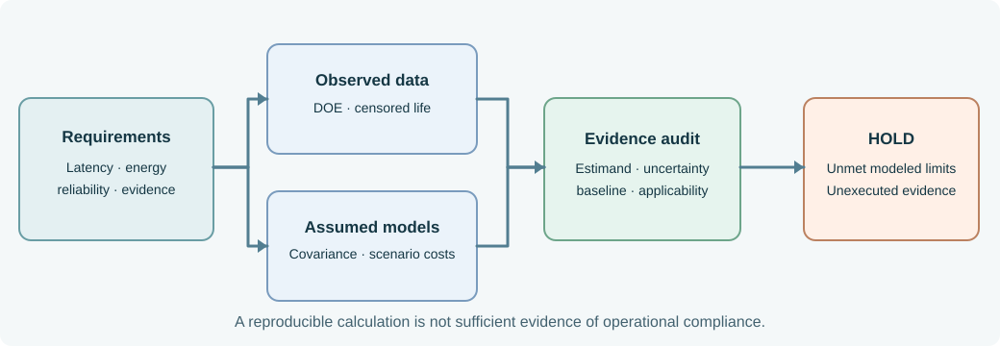

NS-QA10.1 — Winter Operations Quantitative Evidence Dossier
Book 10 · EN.645.756 · Controlled baseline QA-B10 · fictional instructional scenario
This case connects all twelve chapters of Metrics, Modeling and Simulation for Systems Engineering. The modeled shuttle controller is under winter operations review. Its quantitative analysis intentionally leads to a HOLD, not to an automatically approved release. Every row and probability assumption is synthetic; do not mistake the examples for empirical qualification.

Controlled artifacts
| File | What it provides | Important limitation |
|---|---|---|
| requirements.csv | Five named technical and evidence requirements | Teaching thresholds, not actual system acceptance criteria |
| factorial-trials.csv | 24 response-time observations in a balanced 2×2 experiment | Designed data, not production-tail data |
| reliability-life.csv | Eight life-test modules; three failures, five right-censored | Constant-hazard model requires independent validation |
| model-assumptions.json | Units, dependent energy inputs, lifecycle decision costs | Assumed input distribution and scenario likelihood |
| evidence-register.csv | Executed, stale and planned records | Test records are synthetic; links do not imply sufficiency |
| step03_book10_quantitative_check.py | Standard-library, reproducible calculations | Checks arithmetic and data shape, not field model validity |
Run from the repository root with:
python3 SE/K/B10/tools/step03_book10_quantitative_check.py
Decision-related results
| Question | Modeled calculation | Implication |
|---|---|---|
| Controller improvement | Mild effect −50 ms; cold effect −30 ms; interaction +20 ms | Environment changes optimization benefit |
| Cold p95 latency ≤500 ms | Cold optimized mean 490 ms; six trials | The p95 compliance claim is not demonstrated |
| Fifty-hour module reliability ≥0.95 | \(\hat\lambda=3/2410\) /hour, \(\hat R(50)=0.93966\) | Conditional point estimate below target |
| Winter energy p95 ≤29 kWh | Correlated-normal p95 29.13 kWh | Conditional model violates the limit; validate covariance model |
| Incremental lifecycle cost | A: $68k; B: $78k at p=0.2 | A wins expected-cost screen only if feasible |
| Evidence currency | One record QA-B9; one planned study |
Release package incomplete |
How the chapters use this dossier
- Measurement strategy: define estimands and actions before collecting data.
- Distribution: distinguish conditional tails from pooled averages.
- Provenance: document sampling, clocks, baselines, and missingness.
- Inference: distinguish a mean interval from tail compliance.
- DOE design: randomize independent shifts or runs and define blocking.
- DOE analysis: calculate the controller–environment interaction.
- Performance models: fit a saturated model, then test out-of-sample.
- Reliability: write the censored exponential likelihood.
- Uncertainty: propagate correlated energy inputs and compare tails.
- Requirements: calculate margin for the actual required statistic.
- Lifecycle choice: find the cost-switch threshold and information value.
- Technical review: reproduce the calculations, challenge assumptions, and justify HOLD.
Reproduction and challenge
The model intentionally combines several kinds of evidence. A functioning program establishes reproducible arithmetic, not a valid stochastic representation of a shuttle fleet. Reviewers should substitute alternative correlation assumptions, introduce a long-tail latency observation, correct the stale configuration, and rerun the checker. Each change must be accompanied by an explanation of whether it affects computation, statistical inference, model credibility, or decision authority.